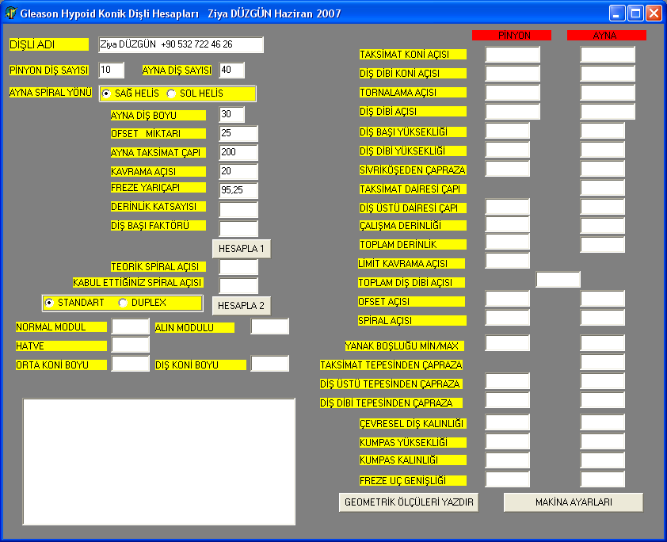
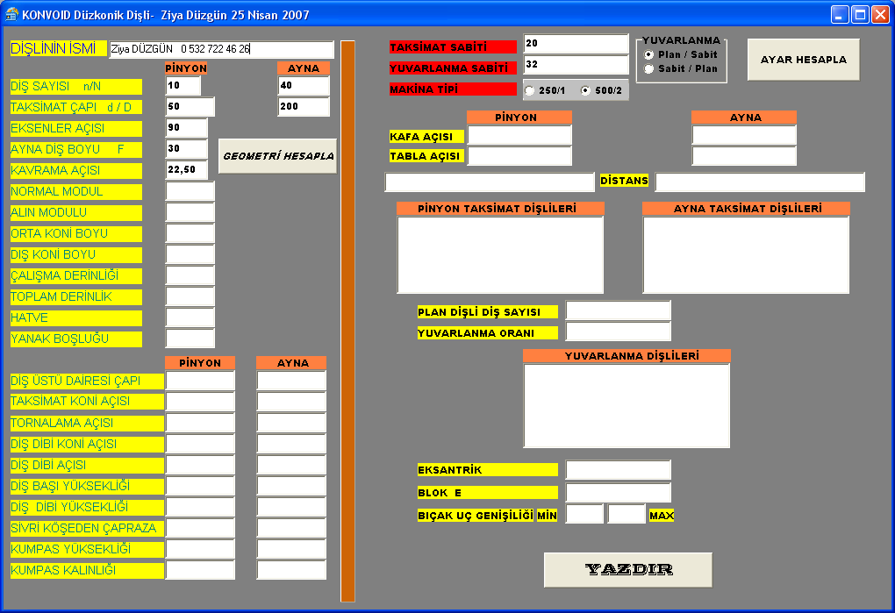
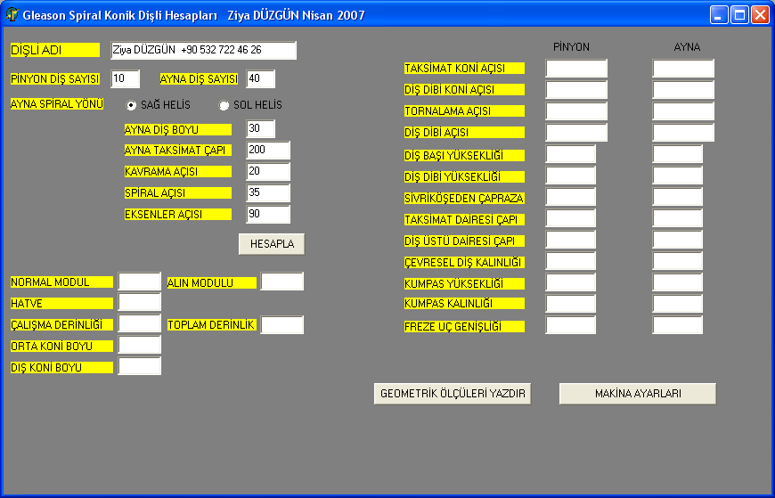

Ziya Düzgün tarafýndan 2007 yýlýnda Konya'da, kendi diþli imalat firmasýndaki ihtiyaçlar üzerine geliþtirilen diþli hesap yazýlýmlarýna ait ekran görüntüleri aþaðýda verilmiþtir;
Bu yazýlýmý satýn almak için Ziya Düzgün ile irtibata geçilmelidir: (532) 722 46 26    |